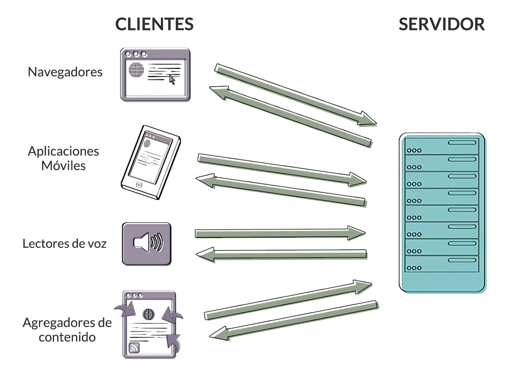
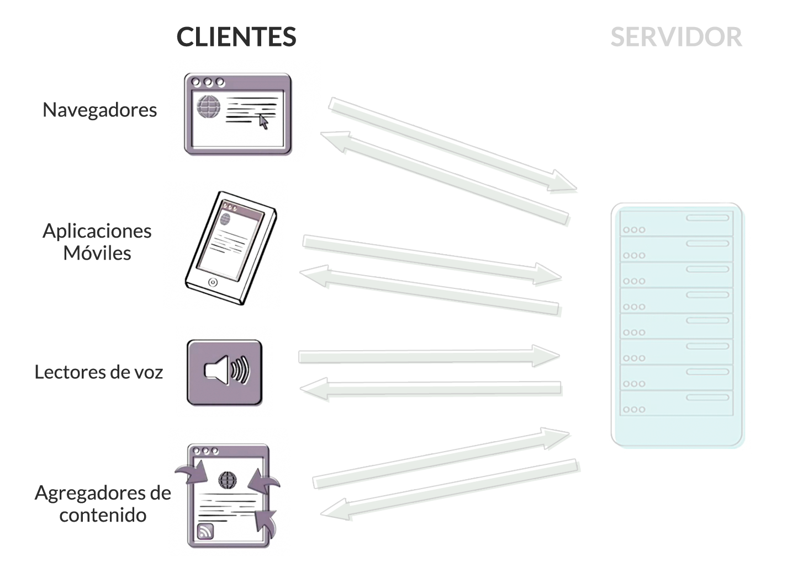
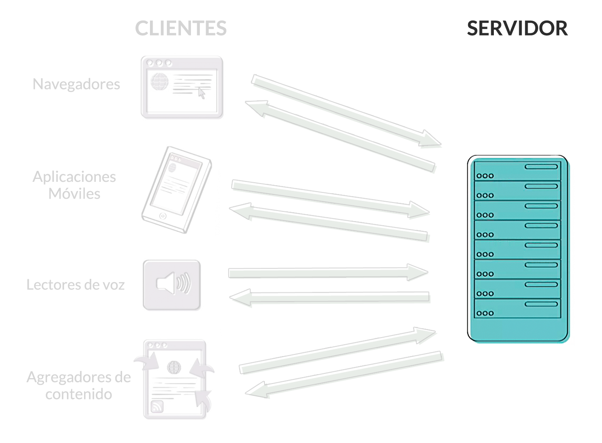

La web puede resumirse como una serie de interacciones entre dos tipos de sistemas: Servidores y Clientes
Los Clientes son los encargados de solicitar y mostrar el contenido web.
Los Servidores son aplicaciones (software) encrgados de enviar contenido a los Clientes cuando este lo solicita.
http://www.baued.es/es/estudios/workshops.html
Las URL son direcciones exclusivas que nos permiten localizar recursos dentro de internet.
Generalmente están compuestas de 3 partes principales:
http://www.baued.es/es/estudios/workshops.html
Los protocolos son lenguajes simples que permiten a diferentes ordenadores compartir información entre sí independientemente de la configuración, sistema operativo o software que utilicen.
http://www.baued.es/es/estudios/workshops.html
Algunos protocolos comúnes en el entorno de internet: FTP, HTTP, SMTP, TCP/IP, UPD.
En concreto, el encargado de transferir datos a través de internet es el protocolo HTTP (HyperText Transfer Protocol)
http://www.baued.es/es/estudios/workshops.html
El nombre del sitio web se compone a su vez de varias partes:
http:// www. baued .es /es/estudios/workshops.html
Es la ruta dentro de la carpeta del dominio al recurso específico que el cliente HTTP está solicitando.
Si no se especifica en la URL, el cliente intentará encontrar el archivo que esté configurado para mostrarse por defecto (normalmente index.html o default.html)
http://www.baued.es/es/estudios/workshops.html
Hay 3 lenguajes encargados de crear un sitio web:
Es el lenguaje que se utiliza para crear la estructura y el contenido de un documento web.
Se trata de un lenguaje de marcado, es decir un sistema para identificar y describir los diferentes elementos de una página
<h1>h1 - Titular de nivel 1</h1>
<h2>h2 - Titular de nivel 2</h2>
<p>Esto es un párrafo con un <strong>texto destacado</strong>.</p>
Es un lenguaje creado para controlar la presentación (el estilo) de un documento HTML.
.subtitulo {
color: red;
font-family: 'Comic Sans MS';
font-size: xx-large;
}
Es un lenguaje de programación que se utiliza para agregar interactividad y comportamientos dinámicos a nuestras páginas.
(function(){
var hi_button = document.getElementById('hi-button'),
hi_container = document.getElementById('hi-container');
hi_button.onclick = function() {
hi_container.innerHTML = '<h2 class="hi">Hola</h2>';
}
})();
Son lenguajes que se ejecutan en el servidor. Se utilizan para crear sitios web con contenidos dinámicos y aplicaciones.
Algunos de estos lenguajes son:
Los elementos son la estructura básica de HTML.
Para marcar un elemento solo necesitamos dos etiquetas o tags (escritas entre corchetes angulares: <,>), una de apertura y una de cierre, que se diferencia por llevar una “ / ” tras el primer corchete.
<elemento>Contenido.</elemento>
Extisten también elementos vacíos, o sea, que no llevan contenido por lo que tampoco utilizan etiqueta de cierre
<img>, <br> o <hr> son algunos ejemplos.
Los elementos pueden anidarse unos dentro de otros (con ciertas restricciones).
En ese caso debe cerrarse siempre primero el elemento hijo antes de cerrar el padre
<body>
<h1>Titular del contenido</h1>
<p>Contenido de la página</p>
</body>
Los elementos pueden contener atributos. Los atributos son instrucciones que modifican la forma en que se comporta el elemento.
Los atributos se componen de un nombre y un valor, escritos con la siguiente sintáxis:
<a href="http://www.google.com">Google</a>
Podemos insertar comentarios en nuestro código para hacer anotaciones que consideremos necesarias para entenderlo mejor.
Todo lo que se escriba dentro de un comentario no será leido por el navegador.
<!--
Esto texto no se verá en el navegador
porque es un comentario
-->
<p>Esto texto si se mostrará</p>
<!DOCTYPE html>
<html>
<head>
<meta charset ="utf-8">
<title>Titulo de la página</title>
</head>
<body>
<h1>Titular del contenido</h1>
<p>Contenido de la página</p>
</body>
</html>
El elemento <head> contiene información descriptiva del mismo documento.
Su contenido no se mostrará en la ventana del navegador.
Algunos contenidos del <head> pueden ser:
<title>.<meta viewport> para controlar la visualización en dispositivos móviles.
<head>
<meta charset="utf-8">
<title>Bau, Centro Universitario de Diseño de Barcelona</title>
<meta name="description" content="En Bau te formarás como profesional del
diseño web">
<meta name="keywords" content="bau, bau diseño, bau escuela, escuela bau,
bau universidad, Centro Universitario de Diseño de Barcelona, bau master">
<meta name="viewport" content="width=device-width, initial-scale=1">
<link rel="stylesheet" href="css/styles.css">
<script src="js/modernizr.js"></script>
<link rel="shortcut icon" href="favicon.ico" type="image/x-icon">
</head>
El elemento <body> contiene todo aquello que se mostrará la ventana del navegador.
| Etiqueta | Elemento que representa |
|---|---|
<h1-h6> |
Titulares. Tienen 6 niveles diferentes. |
<p> |
Párrfos de texto. |
<ul> |
Listas dónde el orden de sus elementos no es importante. |
<ol> |
Listas dónde sus elementos tienen un órden determinado. |
<li> |
Elemento de una lista. Siempre tienen que estar dentro de un <ul> o <ol> |
<blockquote> |
Un bloque de texto que contiene un testimonio de otra fuente. |
| Etiqueta | Elemento que representa |
|---|---|
<a> |
Un link. La url a la que apunta se especifica con el atributo href. |
<strong> |
Un texto destacado. Por defecto se renderiza en negrita. |
<em> |
Un texto enfatizado. Por defecto se renderiza en itálica. |
<u> |
Un texto subrayado. |
<mark> |
Un texto resaltado. |
<code> |
Representa trozos de código. |
Una página web puede estar formada por 5 componentes principales:

Para crear una página web estática sólo necesitaremos HTML para la estructura y CSS para la presentación:

<head>.Los elementos HTML heredarán algunos estilos de sus elementos contenedores (parent elements).
Por ejemplo si declaramos un color al elemento
el resto de elementos de la página tendrán el mismo color a menos que específiquemos lo contrario.La "cascada" a la que hace referencia la C de CSS explica la manera en la que el lenguaje resuelve los conflictos entre selectores.
El cliente web lee los estilos desde la primera línea del documento de manera descendente. Por esta razón si un selector aplica una regla ya exisitente en ese selector esta sera sobreescrita (siempre y cuando la especificidad sea la misma).
El carácter modular del CSS permite modificar el aspecto de una página por completo sin afectar al contenido.

Mediante hojas de estilo específicas podemos optimizar contenidos para múltiples dispositivos.


Mediante el Selector indicamos al código el elemento al que queremos aplicar formato.
Una regla está formada por un selector y una declaración o bloque de declaraciones.
p {
color: red;
font-weight: bold;
}
Es el código entre { } es la secuencia de estilos que aplicaremos al Selector.
p {
color: red;
font-weight: bold;
}
Atributo del Selector que queremos modificar. Finaliza siempre en :
p {
color: red;
font-weight: bold;
Modificando el Valor de una propiedad aplicamos un estilo al selector.
Finaliza siempre en ;
p {
color: red;
font-weight: bold;
Al igual que con HTML, podemos insertar comentarios en nuestro código CSS. Para abrir un comentario escribiremos /* y para cerrarlo */
p {
color: blue;
}
/* Este es un comentario de una sola linea */
/*
pero tambien
puede tener
varias
lineas
*/
Los espacios en blanco y saltos de línea se utilizan para mejorar la legibilidad.
/* Esto: */
p {
color: red;
font-weight: bold;
}
/* Es lo mismo que esto: */
p { color: red; font-weight: bold; }
Existen tres maneras de relacionar un CSS a un HTML en concreto:
Podemos asignar estilos CSS directamente en un elemento HTML mediante el atributo style="".
Los estilos solo se aplicarán a ese elemento en concreto, por lo cual el selector no se utiliza en este caso.
<p style="color: red">Esto es un párrafo rojo.</p>Otra forma de utilizar CSS es mediante un tag <style> en el <head> del documento.
Los estilos se aplicaran a todos los elementos de la página de acuerdo a los selectores utilizados.
<head>
<style>
p {
color: red;
}
h1 {
color : blue;
}
</style>
</head>
La manera más eficiente de relacionar CSS y HTML es utilizando una hoja de estilo externa, lo que nos permite compartir un mismo CSS para todo nuestro sitio web.
Esta hoja es un archivo con extensión .css que se incluye en el <head> del HTML mediante un tag <link>.
<head>
<link rel="stylesheet" href="css/styles.css">
</head>